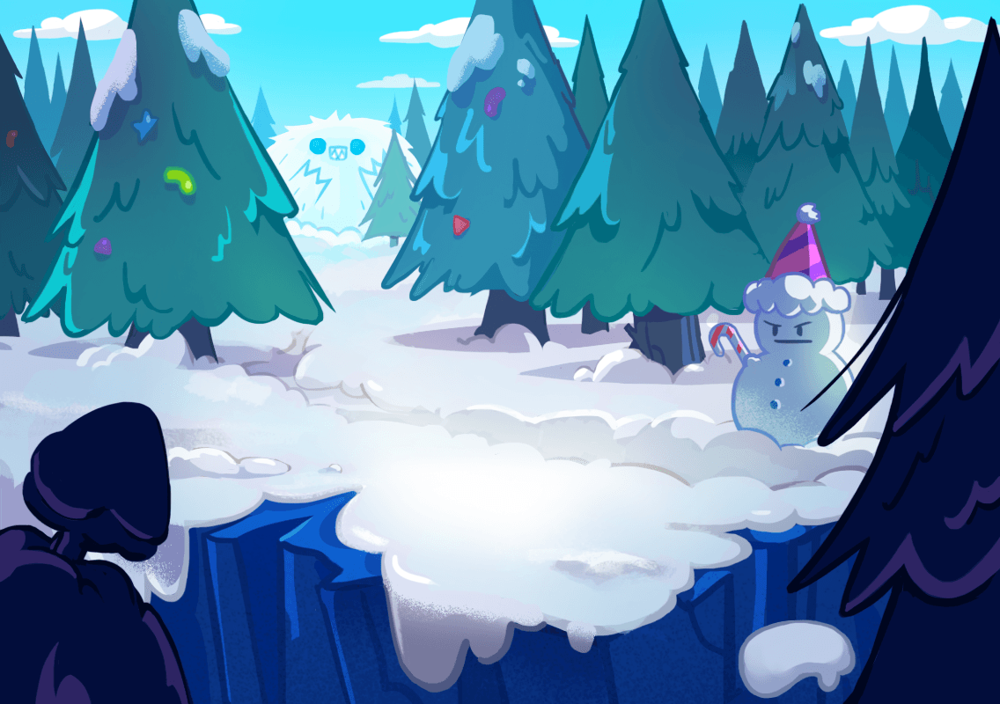
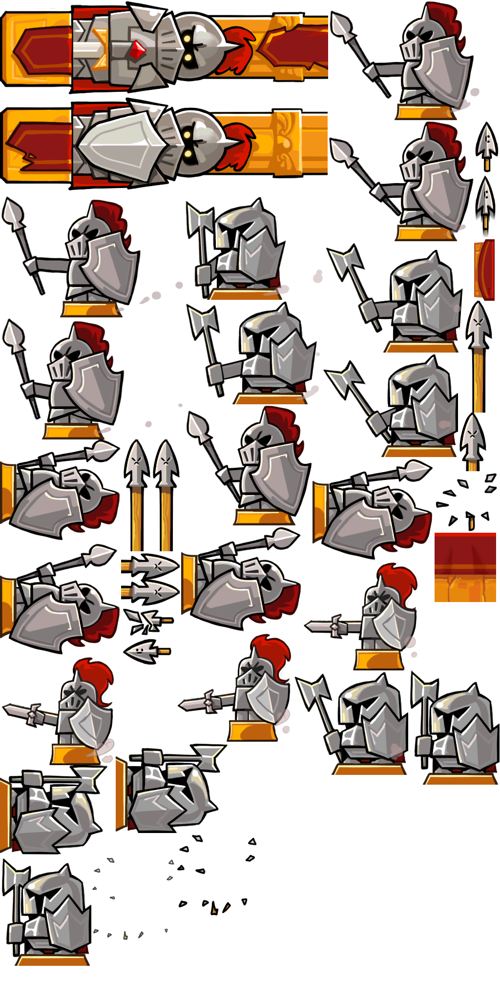
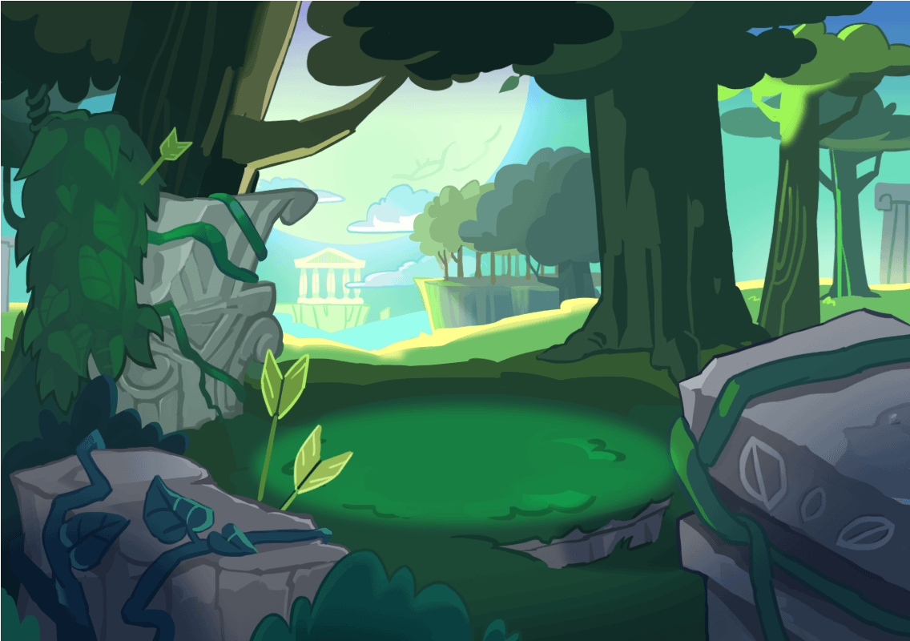

Cookies/Pets
Treasures
Gameplay
Lands
Cookies/Pets
Treasures
Gameplay
Lands
Lands are the setting of where Cookies run and race to earn honor in the form of trophies. As a Cookie gains more trophies, new lands will become available to it and players can race in more difficult stages. Each land has its own unique theme and obstacles for the player to overcome.
Freshly baked from the oven, Cookies start off from the Witch's house and run away. The stage takes place in the Witch's Kitchen, where the background consists of spices and utensils. The obstacles include: bear traps, spikes, oil jars, and moles.
Unlocked at Start
Obstacles and Loading Screen:
After escaping the Wicked Witch's House, Cookies arrive at the Jelly Bug Forest, where they face the dangerous, rainbow-colored Jelly Bugs. In the background are peaceful, fresh flowers that encourage the player to keep going.
Unlocked at 100
Obstacles and Loading Screen:
Onto the Faraway Ocean, the Cookies run on the boardwalk and avoid all the sea animals. The stage features numerous coconut trees, shells, and anchors that block the Cookies' path. In the background is a beautiful sea with soft clouds.
Unlocked at 500
Obstacles and Loading Screen:
All the cookies ride on a mine cart and arrive in the mysterious Crystal Pudding Underworld. It resembles a sweet, torturous world where jelly souls and weapons fly around. The background of the land includes scary jewels and blood flowing.
Unlocked at 1200
Obstacles and Loading Screen:
After a scary experience at an Underworld, the Cookies get to enjoy themselves at a "fun" carnival! They get to avoid scarecrows, jump over impeding trains, and get hit by huge ships! At the end, the Cookies can enjoy the dark scenery of the vine field.
Unlocked at 2600
Obstacles and Loading Screen:
Following the exhilerating Pumpkin experience is the Yeti's Ice Cream Mountain. Here, Cookies race in a sweet ice cream land of alive waffle cones! The chocolate pieces constantly try to crush you, making for a not-so-sweet experience.
Unlocked at 4800
Obstacles and Loading Screen:

In the Shattered Kingdom, Cookies are extremely competitive as they ferociusly race to enter the Champions League. Armored guards constantly try to attack Cookies, and arrows don't make surviving any easier. Cookies run as fast as they can to escape the dark, dangerous Shattered Kingdom, aiming for the top.
Unlocked at 8000
Obstacles and Loading Screen:
Finally at the top of the leagues, the most talented, fit Cookies race at the Champions League. Gods are constantly fighting here, throwing their fireballs down.In order to become the best runner, Cookies must use everything they've learned from past lands. After countless efforts of hard work, the top Cookies earn glorious rewards and honor.
Unlocked at 9000
Obstacles and Loading Screen:
